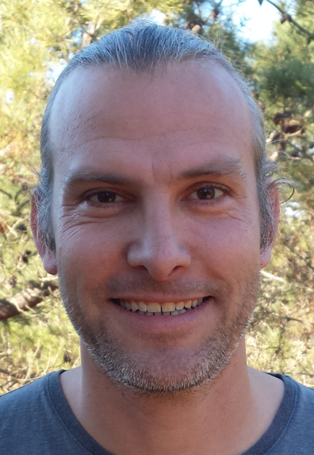

Daniel Kullmann's Resumé

October 2013 - September 2018
Developer
SAP Innovation Center Potsdam
Several projects:
Creation of a Virtual Data Model (VDM) for part of the RE-FX ERP module (Real Estate)
Development of a financial analytical application using XSJS (HANA server-side Javascript) on the backend
Conversion of that application to Scala and HANA cloud platform
Involvement in several smaller project, e.g. performance benchmarking
Programming languages: Javascript (HANA XSJS, node.js and browser), Java, Python, Scala, Bash
Tools and Technologies: SAP HANA, SAPUI5/OpenUI5, Web Services, Git, Eclipse, IntelliJ IDEA, Travis, Jenkins
May 2012 - July 2013
Scientific Assistant
Technical University of Denmark
Further development and maintenance of the existing software for controlling the experimental electrical power system SYSLAB
Administration of the 30+ SYSLAB servers
Programming languages: Java, Python, C/C++, Bash
Tools and Technologies: PostgreSQL, Web Services, Mercurial, Eclipse, Continuous Integration, Gentoo Linux, Ubuntu Linux
September 2008 - April 2012
PhD
Technical University of Denmark
Area: Power Engineering/Computer Science
Title: Policy-based Communication for the Control of Power Systems
Evaluation of a new concept for control communication in power systems
Development of a Java library, several experiments and simulations
Further development of the SYSLAB platform
Programming languages: Java, Python, C/C++
Tools and Technologies: JADE, Rule systems (JBoss Drools), Mercurial, Eclipse, Gentoo Linux, Ubuntu Linux, IEC 61850, IEC 61970 (CIM)
November 2007 - July 2008
Senior Software Developer
Zakoa GmbH, Frankfurt/Germany
Project lead and development of several web applications using PHP and Javascript
Responsible for the maintenance of a Java-based web application
Programming languages: Java, PHP, Javascript
Tools and Technologies: MySQL, Zend Framework, Eclipse, Subversion, jQuery, Linux, Windows XP
January 2007 - October 2007
Sabbatical
Traveling in India, Europe, and California
Voluntary Work
September 2002 - December 2006
Software Developer
5POINT AG, Darmstadt/Germany
Project lead, development and maintenance of several web applications in Java and Perl
Programming languages: Java, Perl, Javascript, C
Tools and Technologies: Tomcat, PostgreSQL, MySQL, Struts, Eclipse, Subversion, jQuery, Linux, Windows 2000
June 2001 -- December 2001
Master Thesis in Computer Science
Fraunhofer CRCG institute in Providence, Rhode Island
Title: Intelligent Behavior Control and World Modeling for Virtual Humans in Virtual Environments
November 1998 - June 2001
Scientific assistant
Institute for Computer Graphics Research IGD, Technical University of Darmstadt, Germany
Development of a library and GUI application in C++ to access and configure 3D input devices
Programming language: C++
Tools and Technologies: OpenGL, Qt
September 1994 - April 2002
Master in Computer Science
Technical University of Darmstadt, Germany
Emphasis: Software Engineering, Databases, Embedded Systems, Cryptography, Computer networks